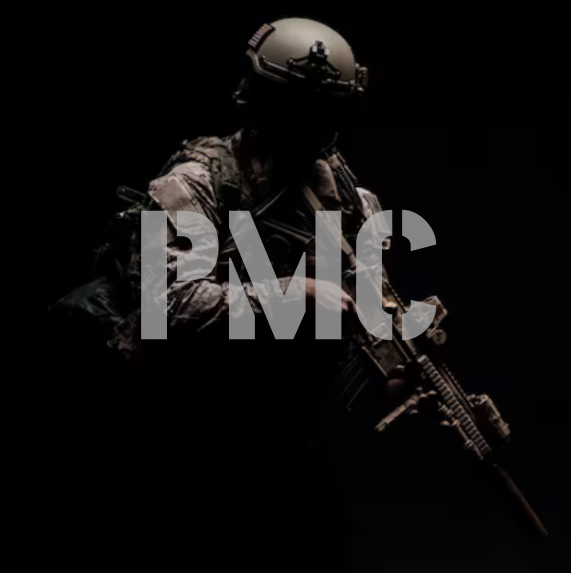

Sobre nós
Bem-vindo ao PMC - O Servidor PVP Definitivo de Deadside!
No PMC, nossa missão é proporcionar a melhor experiência de Player vs. Player (PVP) para todos os sobreviventes do mundo implacável de Deadside. Criado por jogadores apaixonados e para jogadores dedicados, nosso servidor é o lugar onde suas habilidades de combate, estratégias e trabalho em equipe são realmente colocados à prova.
Nossa Visão
Nossa visão é criar um ambiente dinâmico e competitivo, onde cada jogador tenha a oportunidade de se destacar e evoluir. Queremos ser o servidor de referência para os entusiastas de PVP, oferecendo uma experiência equilibrada, justa e empolgante.
O que nos diferencia
Comunidade Ativa e Engajada: No PMC, valorizamos a comunidade. Nossos jogadores são nosso maior patrimônio, e estamos comprometidos em manter um ambiente amigável e cooperativo. Participe de nosso Discord, compartilhe suas experiências, e faça novos amigos e rivais.
Eventos e Torneios Regulares: Para manter a adrenalina sempre alta, organizamos eventos e torneios PVP regulares. Teste suas habilidades contra os melhores e ganhe recompensas exclusivas que farão a diferença em sua jornada.
Administração Dedicada: Nossa equipe de administradores está sempre presente para garantir que tudo funcione perfeitamente. Estamos prontos para resolver quaisquer problemas e ouvir o feedback dos jogadores para continuamente melhorar nossa comunidade.
Servidor Estável e Rápido: Sabemos que a performance é crucial em um servidor PVP. Por isso, investimos em infraestrutura de ponta para garantir um jogo fluido e sem lags, permitindo que você se concentre no que realmente importa: sobreviver e vencer.
Atualizações e Novidades: Estamos sempre atentos às atualizações do jogo e implementamos as novidades de forma rápida para que você possa aproveitar as últimas funcionalidades e melhorias de Deadside.
Junte-se a Nós
Se você está procurando um desafio real e quer testar suas habilidades contra os melhores, o PMC é o lugar certo para você. Prepare-se para intensas batalhas, alianças estratégicas e muita ação. No PMC, cada decisão conta, e cada bala pode ser a diferença entre a vitória e a derrota.
Entre em nosso servidor hoje mesmo e mostre do que você é capaz!
